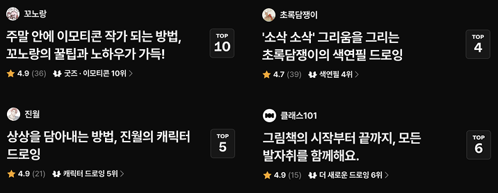
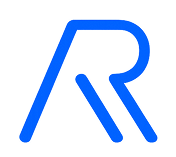
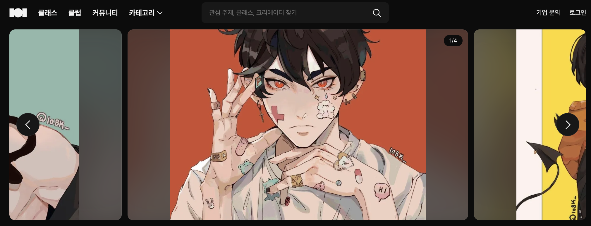

고객의 필요와
사업의 조건
익숙한 분야라는 이유만으로 기획하지 않습니다. 인테리어 과정은 고객에게 프로그램 선택과 포트폴리오 준비의 어려움을 직접 물은 뒤 구성했습니다.
콘텐츠 기획자 연제석입니다.
고객 상담에서 기회를 찾고, 전문가 섭외부터 출시와 운영 개선까지 직접 실행했습니다.
섭외, 커리큘럼, 검수.
서로 다른 문제를 풀어온 세 가지 사례입니다.

CLASS101 · 콘텐츠 기획 / 크리에이터 섭외초록담쟁이와 이가람에게 마음에 드는 작품을 직접 골라 구체적인 감상을 담아 여러 차례 연락했습니다. 협업이 성사된 뒤 커리큘럼·가격·상세페이지를 기획하고 출시를 진행했습니다.
고객은 어떤 프로그램을 배워야 할지, 포트폴리오를 어디서부터 준비할지 어려워했습니다. 상담에서 확인한 필요를 CAD·스케치업·3ds Max와 포트폴리오 준비 과정으로 구체화했습니다.
멘토와 테스터가 강의를 1주 먼저 확인하고 수정 사항을 전달하도록 운영했습니다. 기획자가 강의를 반복해서 돌려보던 부담을 줄이고, 수정 요청을 모으는 절차를 만들었습니다.
실무 프로젝트 10개를 분야별로 볼 수 있습니다.
개인 AI 실험 4개는 아래에 별도로 소개합니다.
두 회사에서 각각 400명 이상의 크리에이터를 발굴하고 연락했습니다. 커리큘럼·가격·상세페이지를 기획하고 제작과 출시를 조율했습니다.
정규수업·멘토링의 단독 및 결합 구매 옵션을 공동 기획했습니다. 컨설팅 팀장이 한 달간 세 가지 옵션을 테스트해 분리 구매 수요를 확인했고, 전면 도입은 운영 조건을 고려해 보류했습니다.

↗기관이 보유한 수강생을 대상으로 맞춤 강의를 제안하는 방향을 선택했습니다. 자체 고객 기반을 확보하는 데 걸리는 시간을 고려한 판단입니다. 현재 제안 단계이며, 브랜드와 유튜브 채널 기획도 담당했습니다.
프로그램 선택과 취업 준비를 함께 다룬 신규 카테고리입니다. 지원 직무와 회사에 맞춘 포트폴리오 준비를 커리큘럼에 포함했습니다.
기획자에게 집중됐던 검수를 멘토·테스터·운영팀이 참여하는 방식으로 바꿨습니다. 상세 사례에서 사전 확인 시점과 피드백 반영 흐름을 볼 수 있습니다.
본인 상담 객단가가 기존 컨설턴트의 직전 3개월 대비 20% 높았습니다. 3개월간 직접 상담하며 확인한 고객의 어려움은 이후 신규 과정 기획에 반영했습니다.
경력보다 친절한 설명을 우선했습니다. 지원자에게 포트폴리오 프로젝트를 설명해 달라고 요청해 전달 방식을 확인하고, JD 작성과 1차 인터뷰를 담당했습니다.
파일 준비부터 암호화와 채널 설정까지 작업 순서를 정리하고 체크리스트와 전사 가이드를 제작했습니다.

↗해외 일러스트 클래스를 선별하고 상세페이지와 커리큘럼을 현지화했습니다. 자막 없는 판매 가능성을 탐색한 파일럿입니다.
라이브 포맷과 세일즈포스를 테스트하고 제작 방식 전환을 지원했습니다. 카테고리 인수인계까지 네 가지 변화의 현업 기준을 정리했습니다.
무엇이 필요한지, 왜 이 방향인지,
실제로 운영할 수 있는지 확인합니다.
익숙한 분야라는 이유만으로 기획하지 않습니다. 인테리어 과정은 고객에게 프로그램 선택과 포트폴리오 준비의 어려움을 직접 물은 뒤 구성했습니다.
이미나 약사 채널의 주요 시청자는 40대 이상 남성이었습니다. 기존 콘텐츠와 대상이 다른 점을 확인하고, 가족 건강을 궁금해하는 엄마를 위한 별도 채널을 기획했습니다.
상품 분리 판매의 수요는 확인했지만 전면 도입은 보류했습니다. 운영팀의 리소스와 컨설팅팀의 상품 구조 변경까지 고려해야 했기 때문입니다.
업무에 활용한 방식과
개인적으로 제작한 도구를 정리했습니다.
개발 경험 없이 Codex로 제작한 웹 포트폴리오. 내용·화면 구성부터 구현 결과 검토까지 직접 진행.
자료 이해 / NotebookLM으로 자료를 묶어 정리
기획 구체화 / ChatGPT로 방향과 초안을 검토
직접 구현 / AI 코딩으로 홈페이지 제작과 수정
음악 제작 실험 / Suno로 음악 제작 시도
영상 제작 실험 / 브루(Vrew)로 텍스트 기반 영상 생성
실무 강점은 관련 사례로 연결됩니다.
도구는 실제 활용 범위와 함께 소개합니다.
사업·전략·콘텐츠 기획의 새로운 기회에 열려 있습니다.
고객과 상품을 이해하고, 협업과 운영까지 연결하는 기획을 하고 싶습니다.